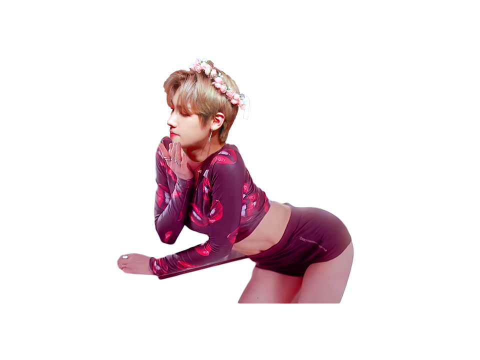
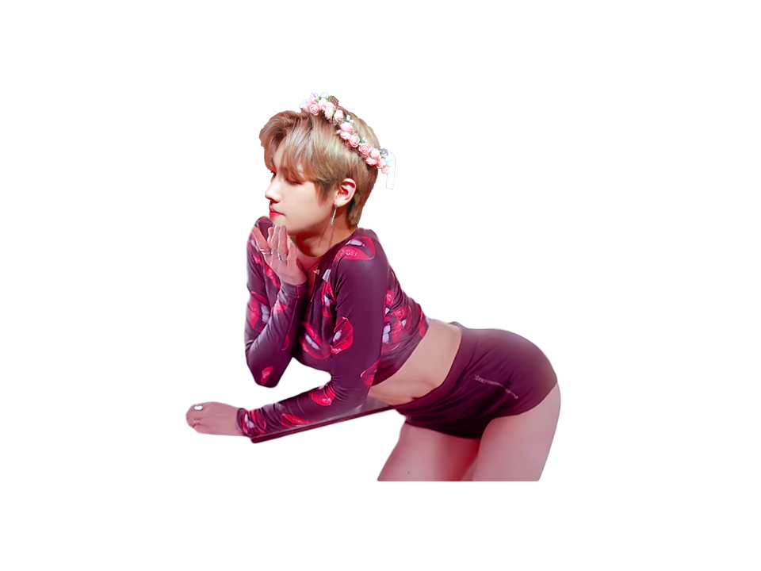

대상화
대상화 (對象化) [대ː상화]
[명사] 1. 어떠한 사물을 일정한 의미를 가진 인식의 대상이 되게 함.
미디어에서 "걸그룹"이라는 이름 아래에 여성들에게 요구되어 온
컨셉(Concept), 이상적인 여성의 모습을 남성의 모습으로 치환한다.
이제부터 "보이그룹"은 대상화 된다.
BoyGroup 1st Album
Track
▷ PURE
▷ SEXY
▷ CUTE
PURE 순수
1.사사로운 욕심이나 못된 생각이 없음
2. 전혀 다른 것의 섞임이 없음
작은 두 손 모아 하늘에 기도하죠 어른이 되길 바래 보며
오늘도 어딘가에서 날 찾고 부르고 있을 것만 같아
그때의 누나 지금 어떤 모습일까 예전에 그 모습 그대로일까


여자들은 똑같대
믿지 말래 사랑한다는 말
사랑하기도 전에
말이 먼저 나오기 때문에


여자라 쓰고 늑대라 읽으랬어
도대체 여자들 그동안 남자에게 왜 그랬어
너무나 많은 남자들 마음을 울린 죄
때문에 그러니 내게 좀 더 널 보여줄래?

SEXY 요염한
1. 성적 매력이 있는
2. 도발적인

깨물어 버리고 싶은 새빨간 사과처럼 (I love u like)
네 입술 위에 묻은 달콤한 크림처럼 (I love u like)
삼켜버리고 싶은 새콤한 과즙처럼 (I love u like)
 


새빨간 립스틱을 바른 나는 빨개요 (빨개요)
깨물어 주고 싶은 애교가 예술이에요
밤마다 내가 생각나 LIKE 매콤한 라면
먼저 들어와 봐 내가 좋다면


뜨거워지니 느낌 오니
처음부터 통했어 눈빛만으로
우린 알아 서로가 원하는 걸
네 맘껏 나를 원해 Just let's dance